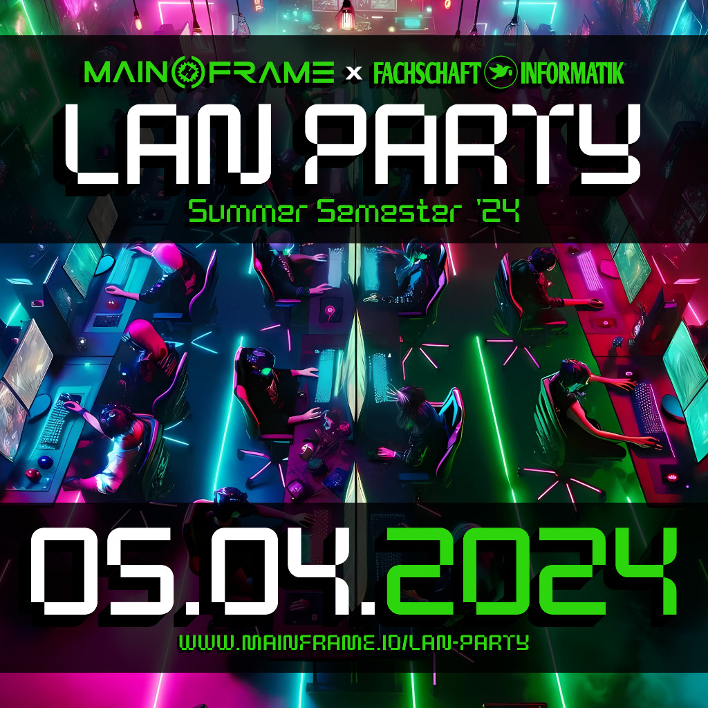

{% block content %}
{% filter markdown|typogrify -%}

We continue our tradition and are happy to announce we will host the next installment of our famous LAN party for the computer science students of the university of Oldenburg.
By now you should be somehow familiar with the process of registration.
For the greenhorns however are here the most important points.
The registration is now open until 23.03.2024.
Tickets are meant to be planning tickets. They cost you 0.00€. However they help us immensely in planning the event.
We don't need any personal information (aside from a working mail address). We only ask to handle this like a regular ticket you paid money for, meaning you only order if you really plan on attending and cancel in case you can't make it.
That way we are able to plan more precisely and everybody wins. Thank you!
We might send out some mails in case of last minute changes.
Be assured you will only receive mails related to this event, if any. We despise SPAM as much as you do.
All data will be destroyed after the event!
Read the FAQ first and then go to [https://tickets.mainframe.io](https://tickets.mainframe.io) and order your ticket.
Thank you
----------
## FAQ
The event will be over night. Due to youth protection act, you do need to be over 18 to join.
Please make sure to select the appropriate checkbox on the registration page!
### Begin & End
* 05.04.2024 - 18:00 - open end
* 06.04.2024 - 10:00 - 12:00 breakfast together. Maybe some more gaming ...
### Stuff to bring
- Power strip with as many outlets as you need for your devices
- Your gaming device (PC, Notebook, Console)
- Monitor and peripherals like mouse and keyboard
- LAN Cable 3-5 Meters
- Headphones (no active speakers please)
- Your games preloaded if possible
### Food & drinks
We do have a shop/kiosk with moderate prices which offers goodies like:
- FritzCola
- Club/Mio Mate
- Water
- Frozen pizza
- Chocolate
- Gummy bears
- Chips
etc.
You are welcome to bring your own food. We do have some additional kitchen utilities like microwave, oven, toaster and sandwich-maker.
Furthermore we will offer some deep-fried food from our own chip-pan.
Please refrain from bringing anything that contains peanuts as we have some people with allergies!
### Additional entertainment
Valve Index VR Headset is most likely going to be playable in our lounge.
Aside from that we do have our regular technical inventory like:
- Lasercutter
- 3D printing
- Scanning electron microscope
- Electronics workshop
you are most welcome to try out.
### Parking
There is free parking on the street from 19:00 until 08:00 the next day. 60ct/30min from 08:00 - 19:00.
The parking spot towards the train station is operated around the clock and not free. You should probably avoid that one.
There is another parking spot under the building. This one is free the first 30min. After that it costs 1€/h. Max is 5€/day. However we don't know what the trigger for the day is. Maybe 24 hours. Maybe midnight. We don't know. You do need EC-Cash for that.
Please have a look at [https://www.mainframe.io/contact.de.dark.html](https://www.mainframe.io/contact.de.dark.html) for further details.
### Sleeping
For short napping we offer some couches.
We do not offer full sleeping capabilities.
{%- endfilter %}
{% endblock content %}